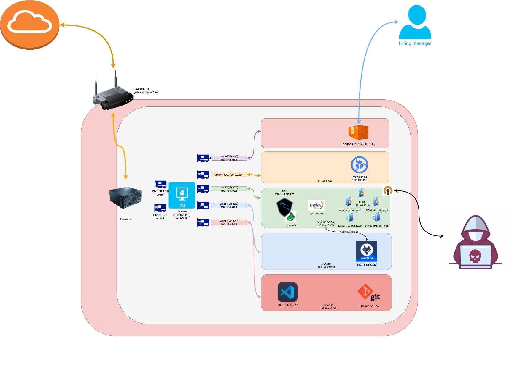

IPv4 Representation
First, some background

https://www.rfc-editor.org/rfc/rfc791
Steve Gibson GRC explains the Internet https://www.youtube.com/watch?v=7ALMh6I1fAo
The model of operation is that an internet module resides in each host engaged in internet communication and in each gateway that interconnects networks. These modules share common rules for interpreting address fields and for fragmenting and assembling internet datagrams. In addition, these modules (especially in gateways) have procedures for making routing decisions and other functions. -rfc791-
The datagram arrives at a gateway host wrapped in the local network header, the local network interface strips off this header, and turns the datagram over to the internet module. The internet module determines from the internet address that the datagram is to be forwarded to another host in a second network. The internet module determines a local net address for the destination host. It calls on the local network interface for that network to send the datagram. -rfc791-
Setting up bloggy
Technologies
Ubuntu Server > Nginx > Git > Hugo > Obsidian > Unifi > No-IP > GoDaddy
Note: Before starting this please consider that if you’d like to have screenshots in your blog you need to have a path from your .md file to the location of the .png. To simplify this when I create a markdown file for a blog post, I first create a folder that will hold all of the content. I wish I’d know to do this from the start.
GOAD Setup
GOAD is a simulated Active Directory LAB environment used to execute Windows attacks The purpose of this lab is to give pentesters a vulnerable Active directory environment ready to use to practice usual attack techniques. There are 5 windows servers in total, 3 domain controllers, two MySQL servers. Users and accounts have been populated and the name mimic charachters from a popular TV series.
Using this guide setup your GOAD LAB on your server.
OpenVAS installation && troubleshooting
Installing OpenVAS on Kali for free vulnerability scanner
Follow the instructions in this link:
https://greenbone.github.io/docs/latest/22.4/kali/index.html
Troubleshooting:

Before running the gvm-setup command from the tutorial above you need to upgrade PostgreSQL to version 17
https://secburg.com/posts/howto-upgrade-postgresql-16-to-17/

 Add:
Add: ExecStart=/usr/sbin/gsad --listen=x.x.x.x --port 9392
To: /usr/lib/systemd/system/gsad.service

sudo systemctl daemon-reload && sudo gvm-start
Caido Certificate Error
Use the following guide to install the package:
https://docs.caido.io/guides/#installing-on-linux
Once you’ve installed Caido in Kali and you have used it in your on your self hosted website. But, you get a certificate error when you go to a lab on Portswigger.
When you installed Caido you have been prompted to set up a proxy server in the network settings in firefox.
As part of the install a certificate should have been added to your ’trusted certificates’. This is fine to use for local machines eg.127.0.01.
Go into the certificate and tick the box that allows firefox to trust it.